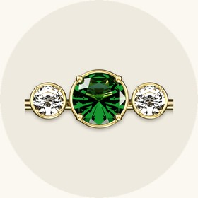
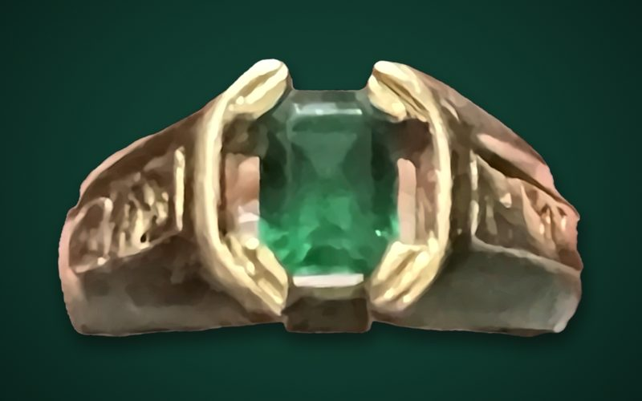

Gems are in my veins.

The emerald that started it all
One of my earliest memories is a jewelry shop in Napa. I sat wide-eyed as the jeweler laid out four emeralds and handed my dad a loupe. I was straining to see, so my dad passed it to me, and one emerald pulled me straight in. The light bounced around inside it, throwing a color you can’t explain. It just has to be seen. That crisp apple-green Muzo emerald from Colombia became a 14k gold tension ring with gold nuggets down the sides.
A color you can’t explain. It just has to be seen.The first emerald
Later, in Elk Grove, my dad and the local jeweler would talk about the amazing gems that had just come in: watermelon tourmaline, sapphire, alexandrite, black opal from Australia. Those talks stuck with me.
Every stone in my collection has its own story of how it came to me. Now each one is moving to its new home for the next part of its journey.
That emerald crowns our crest. The diamond below it stands for the whole family.